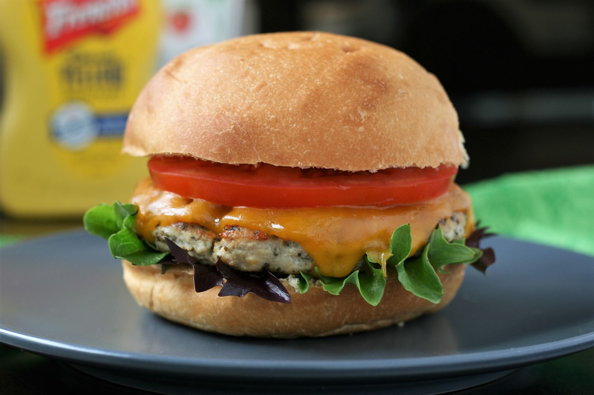

Chicken Burger

Parmesan-Basil Ground Chicken Burgers
Scrumptious alternative to ground beef. These delicious ground chicken burgers are the perfect quick and easy
meal for 2 to 4 people. These burgers can be prepared in advance and put in the freezer (uncooked) for a quick
dinner idea. Also these are very yummy with ground turkey as well. Serve with spicy mustard or ketchup. These
burgers are great without the bread as well if you are controlling your carb intake.
- 1 pound ground chicken
- ¼ cup grated Parmesan cheese
- 2 tablespoons dried basil
- ½ teaspoon garlic powder
- ¼ teaspoon salt
- ¼ teaspoon ground black pepper
- 1 serving nonstick cooking spray
- 4 white hamburger buns, warmed
-
Combine ground chicken, Parmesan cheese, basil, garlic powder, salt, and pepper in a mixing bowl; mix
thoroughly.
-
Section mixture into 4 equal portions and form into flat, round patties.
-
Heat a nonstick skillet over medium heat, spraying with cooking spray if needed.
Place burgers in the
hot
skillet and cook until browned and no longer pink, about 5 minutes on each side.
Serve on warmed buns.
Cook's Notes:
You can use fresh basil instead of dried, and wheat hamburger buns instead of white.
Cooking times may vary depending on thickness and size of burgers.